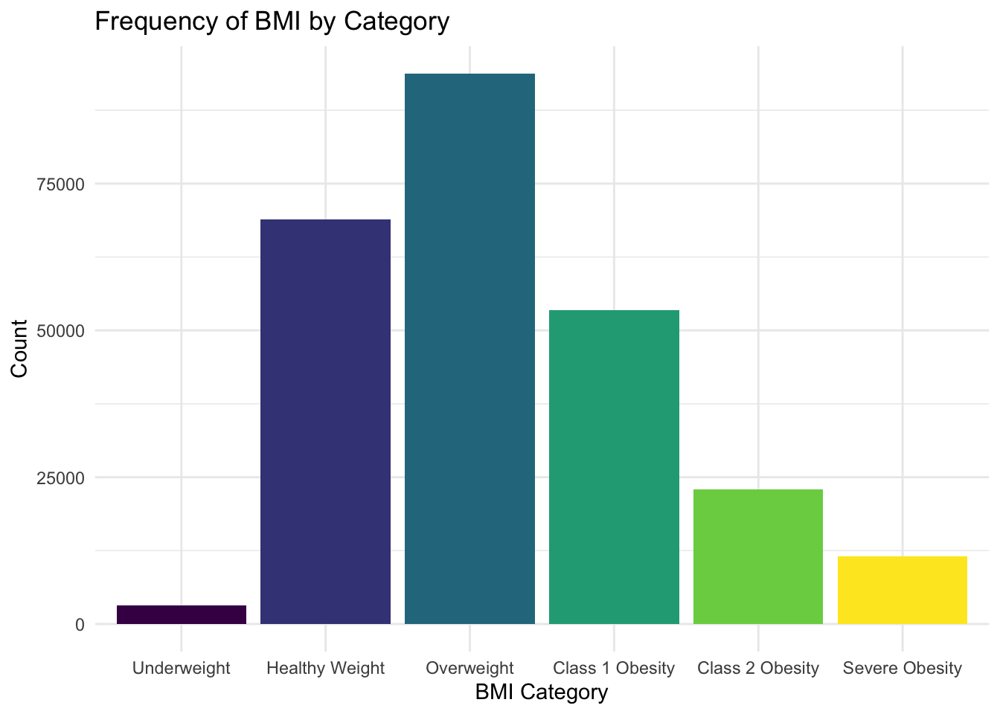
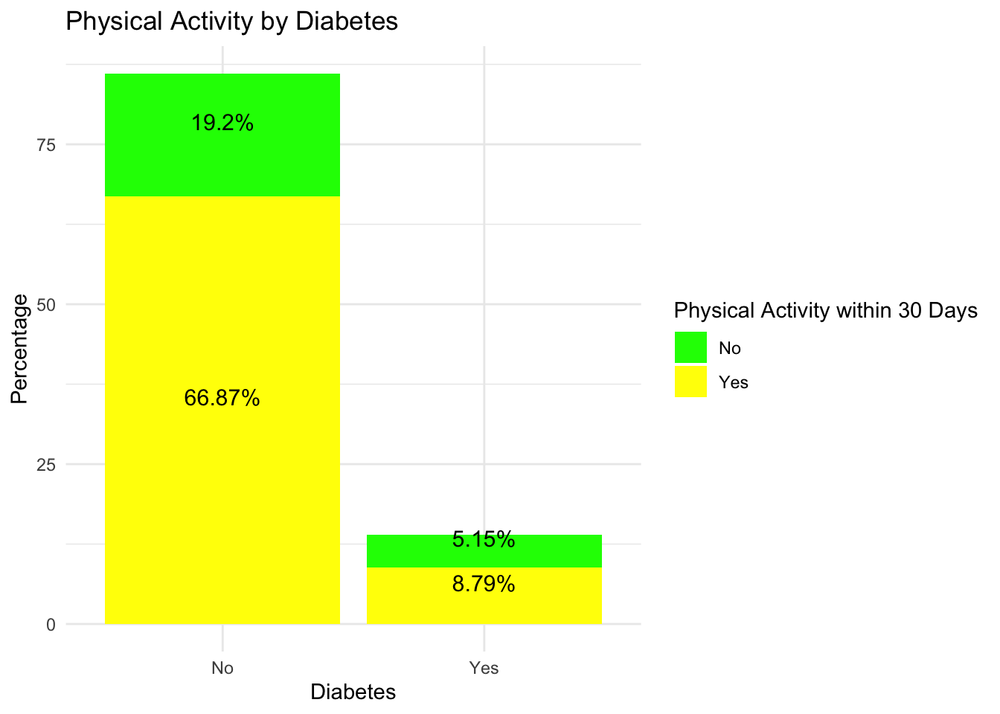
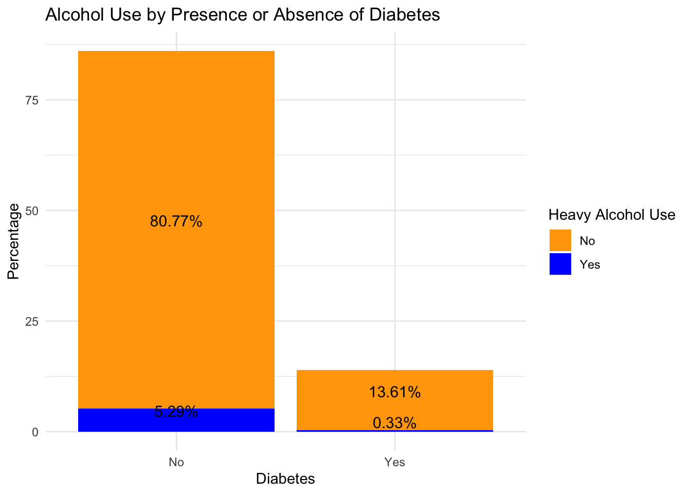
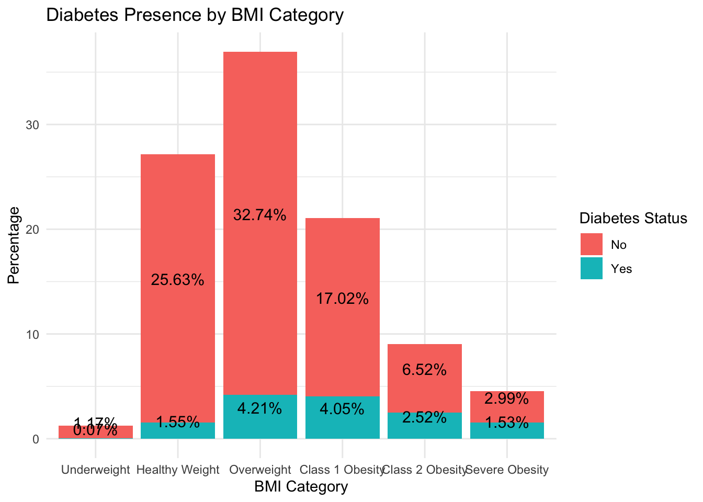
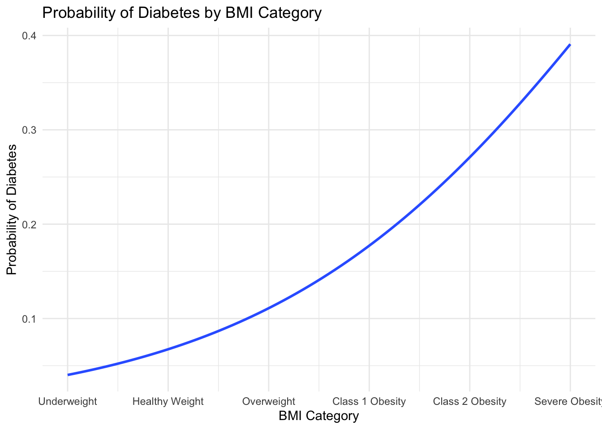

suppressPackageStartupMessages(library(tidyverse))Exploratory Data Analysis
Introduction to Diabetes
Diabetes is a significant chronic medical condition which is becoming more and more prevalent in the United States. When people develop diabetes, they cannot regulate their blood glucose normally, which leads to reduced quality of life. When diabetes is not controlled, through diet, exercise, and/or medication therapy it can lead to additional medical problems. The main mechanism by which diabetes occurs, is that in a normal body, insulin is used to break down sugars from food into energy. In patients with diabetes, insulin is either not produced or does not work as normal leading to increased blood glucose. There are 2 types of diabetes.
- Type 1 is normally genetic and the body does not produce insulin
- Type 2 is normally developed throughout life and while the body may produce insulin, it does not work as it should
Additionally, diabetes can lead to multiple complications including cardiovascular, renal, vision, and poor wound healing.
Diabetes continues to increase, in the US, with upwards of 88 million with pre-diabetes and 34 million people with diabetes. Type 2 diabetes is really the version of concern, since its prevalence varies by age, education level, income status, location, race, and many other Social Drivers of Health (SDOH).
Data of Concern
The data explored through this analysis comes from the Behavioral Risk Factor Surveillance System (BRFSS); a telephone survey collected through the CDC annually. It has been conducted every year since 1984 and targets over 400,000 Americans. The data we will focus on is from the 2015 survey of 441,455 individuals with 330 feature.
The specific dataset to explore is titled diabetes_binary_health_indicators_BRFSS2015.csv More information can be found here.
This specific set is of 253,680 responses. Here, the target variable is Diabetes_binary where 0 indicates no diabetes and 1 indicates the presence of prediabetes or diabetes. Overall, there are 21 variables in this dataset.
Variables to Explore Through Exploratory Data Analysis (EDA) & Modeling
For this analysis and modeling, we are going to limit our scope and explore 4 predictor variables.
Target Variable:
Diabetes_binary0= No Diabetes1= Diabetes or Prediabetes
Predictor Variables:
PhysActivity: Did the subject have physical activity within the past 30 days (excluding job activities)0= No1= Yes
Veggies: Did the subject consume 1 or more vegetables in the past 30 days0= No1= Yes
HvyAlcoholConsump: Did the subject consume ≥ 14 (male) or ≥ 7 (female) drinks per week0= No1= Yes
BMI: Body Mass Index (will later create as a factor and breakdown the categories based on the CDC definition below). The oiginal dataset captures just the BMI.< 18.5 kg/m^2 = Underweight
18.5 to < 25 kg/m^2 = Healthy Weight
25 to < 30 kg/m^2 = Overweight
30 to < 35 kg/m^2 = Class 1 Obesity
35 to 40 kg/m^2 = Class 2 Obesity
> 40 kg/m^2 = Severe Obesity
Choice of Variables:
For this model, 4 predictor variables weer chosen. As a pharmacist, I know how some of these variables would affect someone’s risk for development of prediabetes and diabetes. Diet and exercise are some of the most important factors that a patient has direct control of, which can either lower or increase their risk of development of diabetes. As a result, I chose whether or not the subject has physical activity to indicate whether or not they live a sedentary lifestyle. Then I decided on their vegetable and alcohol consumption as addition variables to consider. If a patient increased their vegetable intake and / or decreased alcohol intake, they likely can reduce their risk of diabetes. Finally, I chose BMI as a 4th variable. This is another factor a patient has control over and can lead to diabetes if they have higher BMIs. I also wanted at least 1 variable to be more than just binary, so BMI will be later converted to categories.
Ideally, these variables would have had more quantitative criteria, but the survey was very broad. For example, it would’ve been more ideal to ask for how much exercise per week, not just if you had physical activity 1 time in a month. As a result, this model may not be a great predictor of someone having prediabetes or diabetes.
Purpose of this EDA and Model
The purpose of this EDA is to explore the chosen variables, through a survey, which may be associated with someone’s development of prediabetes or diabetes. We want to examine our chosen variables to see if maybe visualize some relationships between the variables. Before modeling our data, we can also visualize some summary statistics to understand the composition of our subjects from this survey.
After, we would then want to evaluate some different models, to identify the best one that can be used to predict the probability of someone developing prediabetes or diabetes. Different types of models will be evaluated since we want to create one that is accurate and is able to perform well on new data we provide, for example a different year of the survey. Ideally, a fit model would have lower error metrics and high accuracy.
Data Import/Clean Up
Will first put some code for our needed packages:
Let’s import the data:
diabetes_data_df <- read.csv("~/ST558 Repo/Final Project/diabetes_binary_health_indicators_BRFSS2015.csv", header = TRUE)
diabetes_data <- as_tibble(diabetes_data_df) #convert to a tibble, likely needed later
diabetes_data# A tibble: 253,680 × 22
Diabetes_binary HighBP HighChol CholCheck BMI Smoker Stroke
<dbl> <dbl> <dbl> <dbl> <dbl> <dbl> <dbl>
1 0 1 1 1 40 1 0
2 0 0 0 0 25 1 0
3 0 1 1 1 28 0 0
4 0 1 0 1 27 0 0
5 0 1 1 1 24 0 0
6 0 1 1 1 25 1 0
7 0 1 0 1 30 1 0
8 0 1 1 1 25 1 0
9 1 1 1 1 30 1 0
10 0 0 0 1 24 0 0
# ℹ 253,670 more rows
# ℹ 15 more variables: HeartDiseaseorAttack <dbl>, PhysActivity <dbl>,
# Fruits <dbl>, Veggies <dbl>, HvyAlcoholConsump <dbl>, AnyHealthcare <dbl>,
# NoDocbcCost <dbl>, GenHlth <dbl>, MentHlth <dbl>, PhysHlth <dbl>,
# DiffWalk <dbl>, Sex <dbl>, Age <dbl>, Education <dbl>, Income <dbl>Now that the data has been imported, lets look at the structure of the data and then check if there are any missing values.
str(diabetes_data)tibble [253,680 × 22] (S3: tbl_df/tbl/data.frame)
$ Diabetes_binary : num [1:253680] 0 0 0 0 0 0 0 0 1 0 ...
$ HighBP : num [1:253680] 1 0 1 1 1 1 1 1 1 0 ...
$ HighChol : num [1:253680] 1 0 1 0 1 1 0 1 1 0 ...
$ CholCheck : num [1:253680] 1 0 1 1 1 1 1 1 1 1 ...
$ BMI : num [1:253680] 40 25 28 27 24 25 30 25 30 24 ...
$ Smoker : num [1:253680] 1 1 0 0 0 1 1 1 1 0 ...
$ Stroke : num [1:253680] 0 0 0 0 0 0 0 0 0 0 ...
$ HeartDiseaseorAttack: num [1:253680] 0 0 0 0 0 0 0 0 1 0 ...
$ PhysActivity : num [1:253680] 0 1 0 1 1 1 0 1 0 0 ...
$ Fruits : num [1:253680] 0 0 1 1 1 1 0 0 1 0 ...
$ Veggies : num [1:253680] 1 0 0 1 1 1 0 1 1 1 ...
$ HvyAlcoholConsump : num [1:253680] 0 0 0 0 0 0 0 0 0 0 ...
$ AnyHealthcare : num [1:253680] 1 0 1 1 1 1 1 1 1 1 ...
$ NoDocbcCost : num [1:253680] 0 1 1 0 0 0 0 0 0 0 ...
$ GenHlth : num [1:253680] 5 3 5 2 2 2 3 3 5 2 ...
$ MentHlth : num [1:253680] 18 0 30 0 3 0 0 0 30 0 ...
$ PhysHlth : num [1:253680] 15 0 30 0 0 2 14 0 30 0 ...
$ DiffWalk : num [1:253680] 1 0 1 0 0 0 0 1 1 0 ...
$ Sex : num [1:253680] 0 0 0 0 0 1 0 0 0 1 ...
$ Age : num [1:253680] 9 7 9 11 11 10 9 11 9 8 ...
$ Education : num [1:253680] 4 6 4 3 5 6 6 4 5 4 ...
$ Income : num [1:253680] 3 1 8 6 4 8 7 4 1 3 ...colSums(is.na(diabetes_data)) Diabetes_binary HighBP HighChol
0 0 0
CholCheck BMI Smoker
0 0 0
Stroke HeartDiseaseorAttack PhysActivity
0 0 0
Fruits Veggies HvyAlcoholConsump
0 0 0
AnyHealthcare NoDocbcCost GenHlth
0 0 0
MentHlth PhysHlth DiffWalk
0 0 0
Sex Age Education
0 0 0
Income
0 Great, it looks like there are no missing values. Unfortunately all of the variables are number, but really the majority are binary. Since we are only going to evaluate a few of the variables from the survey, the next step will be to select out those variables and do some manipulation on them alone.
diabetes_data_selected <- diabetes_data |>
select(Diabetes_binary, BMI, Veggies, PhysActivity, HvyAlcoholConsump)
str(diabetes_data_selected)tibble [253,680 × 5] (S3: tbl_df/tbl/data.frame)
$ Diabetes_binary : num [1:253680] 0 0 0 0 0 0 0 0 1 0 ...
$ BMI : num [1:253680] 40 25 28 27 24 25 30 25 30 24 ...
$ Veggies : num [1:253680] 1 0 0 1 1 1 0 1 1 1 ...
$ PhysActivity : num [1:253680] 0 1 0 1 1 1 0 1 0 0 ...
$ HvyAlcoholConsump: num [1:253680] 0 0 0 0 0 0 0 0 0 0 ...Now to make the data more readable, we will convert the variables to factors. The meaning of the 0 and 1’s were described above. Additionally, the categories for BMI are above.
diabetes_summarize <- diabetes_data_selected |>
#create factors of the binary variables
mutate(diabetes = factor(Diabetes_binary, levels = c(0,1), #create factors of the binary variables
labels = c("No", "Yes")),
veggies = factor(Veggies, levels = c(0,1),
labels = c("No", "Yes")),
exercise = factor(PhysActivity, levels = c(0,1),
labels = c("No", "Yes")),
alcohol_use = factor(HvyAlcoholConsump, levels = c(0,1),
labels = c("No", "Yes"))) |>
#creating a factor for BMI, need to figure make categories then factor so will do separately for ease of code
#want factor so they are ordered appropriate during analysis
mutate(BMI_category = case_when(
BMI < 18.5 ~ "Underweight",
BMI >= 18.5 & BMI < 25 ~ "Healthy Weight",
BMI >= 25 & BMI < 30 ~ "Overweight",
BMI >= 30 & BMI < 35 ~ "Class 1 Obesity",
BMI >= 35 & BMI <=40 ~ "Class 2 Obesity",
BMI > 40 ~ "Severe Obesity")) |>
mutate(bmi = factor(BMI_category, levels = c(
"Underweight",
"Healthy Weight",
"Overweight",
"Class 1 Obesity",
"Class 2 Obesity",
"Severe Obesity"
), ordered = TRUE)
) |>
select(diabetes, veggies, exercise, alcohol_use, bmi)
str(diabetes_summarize)tibble [253,680 × 5] (S3: tbl_df/tbl/data.frame)
$ diabetes : Factor w/ 2 levels "No","Yes": 1 1 1 1 1 1 1 1 2 1 ...
$ veggies : Factor w/ 2 levels "No","Yes": 2 1 1 2 2 2 1 2 2 2 ...
$ exercise : Factor w/ 2 levels "No","Yes": 1 2 1 2 2 2 1 2 1 1 ...
$ alcohol_use: Factor w/ 2 levels "No","Yes": 1 1 1 1 1 1 1 1 1 1 ...
$ bmi : Ord.factor w/ 6 levels "Underweight"<..: 5 3 3 3 2 3 4 3 4 2 ...diabetes_summarize# A tibble: 253,680 × 5
diabetes veggies exercise alcohol_use bmi
<fct> <fct> <fct> <fct> <ord>
1 No Yes No No Class 2 Obesity
2 No No Yes No Overweight
3 No No No No Overweight
4 No Yes Yes No Overweight
5 No Yes Yes No Healthy Weight
6 No Yes Yes No Overweight
7 No No No No Class 1 Obesity
8 No Yes Yes No Overweight
9 Yes Yes No No Class 1 Obesity
10 No Yes No No Healthy Weight
# ℹ 253,670 more rowsSummary of the Date
Let’s first just do some initial counting.
Presence or Absence of Diabetes
diabetes_summarize |>
count(diabetes) |>
mutate(percent = round(n / sum(n) * 100, 2))# A tibble: 2 × 3
diabetes n percent
<fct> <int> <dbl>
1 No 218334 86.1
2 Yes 35346 13.9This breakdown actually surprises me. I thought the presence of prediabetes or diabetes in this survey would’ve been higher, though this survey was from about 10 years ago, so that might be why.
Does the subject eat vegetables?
diabetes_summarize |>
count(veggies) |>
mutate(percent = round(n / sum(n) * 100, 2))# A tibble: 2 × 3
veggies n percent
<fct> <int> <dbl>
1 No 47839 18.9
2 Yes 205841 81.1This is not necessarily surprising that the majority eat vegetables at least 1 time per day. Based on the information provided, it does not quantify a certain amount, just 1 time.
Does the subject perform physical activity?
diabetes_summarize |>
count(exercise) |>
mutate(percent = round(n / sum(n) * 100, 2))# A tibble: 2 × 3
exercise n percent
<fct> <int> <dbl>
1 No 61760 24.4
2 Yes 191920 75.6This is physical activity within 30 days. Similar to vegetables, it does not quantify, so these numbers make sense. I imagine if it asked more than 5 - 10 times a month, or at least 150 minutes per week, then the percent “Yes” would likely decline.
Presence of Excessive Alcohol Use
diabetes_summarize |>
count(alcohol_use) |>
mutate(percent = round(n / sum(n) * 100, 2))# A tibble: 2 × 3
alcohol_use n percent
<fct> <int> <dbl>
1 No 239424 94.4
2 Yes 14256 5.62This amount who drink excessively is not surprising. This variable actually quantifies things better than the previous 2, since its criteria is more specific.
Summary of BMI Categories
diabetes_summarize |>
count(bmi) |>
mutate(percent = round(n / sum(n) * 100, 2))# A tibble: 6 × 3
bmi n percent
<ord> <int> <dbl>
1 Underweight 3127 1.23
2 Healthy Weight 68953 27.2
3 Overweight 93749 37.0
4 Class 1 Obesity 53451 21.1
5 Class 2 Obesity 22921 9.04
6 Severe Obesity 11479 4.52ggplot(diabetes_summarize, aes(bmi, fill = bmi))+
geom_bar() +
labs(x = "BMI Category",
y = "Count",
title = "Frequency of BMI by Category") +
theme_minimal() +
theme(legend.position = "none")
This is a nice distribution of BMI categories. The lower level of diabetes in the overall population would tell me that overall the BMIs should rather normal (Healthy Weight/Overweight). I think the overweight range of > 25 to 30 kg/m^2 BMI is not the greatest label set by the CDC.
Bar Graphs to Visual Proportions of Some Categorizations
Now that we have looked at each variable separately let’s look at some frequencies of people with and without diabetes in some of the categories. For this one, let’s look at diabetes frequency based on physical activity, heavy alcohol use, and BMI cateogory. Will exclude vegetable consumption here since a large majority of subjects consume them. It might be helpful to see them in a bar graph format.
diabetes_exercise <- diabetes_summarize |>
count(diabetes, exercise) |>
mutate(percent = round(n / sum(n) * 100, 2))
diabetes_exercise# A tibble: 4 × 4
diabetes exercise n percent
<fct> <fct> <int> <dbl>
1 No No 48701 19.2
2 No Yes 169633 66.9
3 Yes No 13059 5.15
4 Yes Yes 22287 8.79ggplot(diabetes_exercise, aes(x = diabetes, y = percent, fill = exercise)) +
geom_bar(stat = "identity", position = "stack") +
geom_text(aes(label = paste0(percent, "%")),
position = position_stack(vjust = 0.5),
vjust = -0.3, size = 4) +
labs(
x = "Diabetes",
y = "Percentage",
title = "Physical Activity by Diabetes",
fill = "Physical Activity within 30 Days"
) +
scale_fill_manual(values = c("No" = "green", "Yes" = "yellow")) +
theme_minimal()
I think looking at this graph, I am not sure this helps to figure out whether physical activity is associated with the absence of diabetes. In patients without, it is clear a large majority have physical activity within the past 30 days. When looking at subjects with diabetes, more did have physical activity then did not. As stated before, since this is not really quantifed as more than just physical activity within 30 days, it may not be as helpful as something that quantifies better.
diabetes_alcohol_use <- diabetes_summarize |>
count(diabetes, alcohol_use) |>
mutate(percent = round(n / sum(n) * 100, 2))
diabetes_alcohol_use# A tibble: 4 × 4
diabetes alcohol_use n percent
<fct> <fct> <int> <dbl>
1 No No 204910 80.8
2 No Yes 13424 5.29
3 Yes No 34514 13.6
4 Yes Yes 832 0.33ggplot(diabetes_alcohol_use, aes(x = diabetes, y = percent, fill = alcohol_use)) +
geom_bar(stat = "identity", position = "stack") +
geom_text(aes(label = paste0(percent, "%")),
position = position_stack(vjust = 0.5),
vjust = -0.3, size = 4) +
labs(
x = "Diabetes",
y = "Percentage",
title = "Alcohol Use by Presence or Absence of Diabetes",
fill = "Heavy Alcohol Use"
) +
scale_fill_manual(values = c("No" = "orange", "Yes" = "blue")) +
theme_minimal()
Since there was minimal heavy alcohol use within this population, this graph may not tell us much. There is overall a small percentage of heavy alcohol use in the diabetes group.
diabetes_bmi_cat <- diabetes_summarize |>
count(diabetes, bmi) |>
mutate(percent = round(n / sum(n) * 100, 2))
diabetes_bmi_cat# A tibble: 12 × 4
diabetes bmi n percent
<fct> <ord> <int> <dbl>
1 No Underweight 2958 1.17
2 No Healthy Weight 65025 25.6
3 No Overweight 83057 32.7
4 No Class 1 Obesity 43170 17.0
5 No Class 2 Obesity 16528 6.52
6 No Severe Obesity 7596 2.99
7 Yes Underweight 169 0.07
8 Yes Healthy Weight 3928 1.55
9 Yes Overweight 10692 4.21
10 Yes Class 1 Obesity 10281 4.05
11 Yes Class 2 Obesity 6393 2.52
12 Yes Severe Obesity 3883 1.53ggplot(diabetes_bmi_cat, aes(x = bmi, y = percent, fill = diabetes)) +
geom_bar(stat = "identity", position = "stack") +
geom_text(aes(label = paste0(percent, "%")),
position = position_stack(vjust = 0.5),
vjust = -0.3, size = 4) +
labs(
x = "BMI Category",
y = "Percentage",
title = "Diabetes Presence by BMI Category",
fill = "Diabetes Status"
) +
scale_fill_discrete() +
theme_minimal()
As expected, when looking at the percent of subjects within each BMI category, there are higher proportions of subjects with diabetes in the higher BMI categories.
Scatter Plot to Visual Diabetes Probability based on BMI
Finally, lets look at a scatter plot to see if we can visual the relationship between BMI and diabetes with something different than a bar graph.
#need to convert BMI to numeric. Also need to take the diabetes factor and convert to numeric for
#plotting reasons
ggplot(diabetes_summarize, aes(x = as.numeric(bmi), y = as.numeric(diabetes == "Yes"))) +
#plot a logistic line below
geom_smooth(method = "glm", method.args = list(family = "binomial"), se = FALSE) +
#creating our bmi categories as numeric for better plotting
scale_x_continuous(breaks = 1:6, labels = levels(diabetes_summarize$bmi)) +
labs(title = "Probability of Diabetes by BMI Category",
x = "BMI Category",
y = "Probability of Diabetes") +
theme_minimal()`geom_smooth()` using formula = 'y ~ x'
This graphs help with some of our modeling ideas. Plotting a logistic line comparing the probability of having diabetes based on BMI category, as BMI increases, the likelihood of diabetes increases, which makes sense.